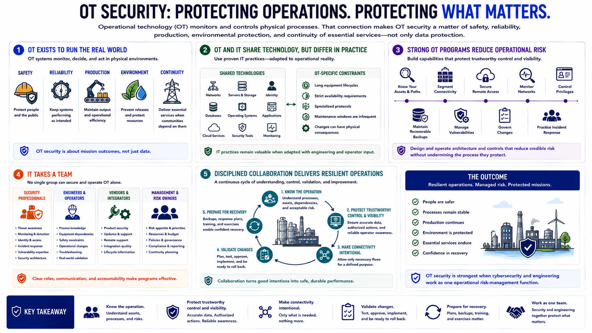

Course Summary and Key Takeaways
Connecting to LMS... Progress: in progress

Narration
Operational technology monitors and controls physical processes. That connection makes OT security a matter of safety, reliability, production, environmental protection, and continuity of essential services, not only data protection.
OT and IT share technology but operate under different constraints. Long equipment lifecycles, strict availability requirements, specialized protocols, maintenance windows, and physical consequences require security controls to be tested against operational reality. IT practices remain valuable when they are adapted with engineering and operator input.
Strong OT programs understand their assets and communication paths, segment unnecessary connectivity, secure remote access, monitor networks, control privileges, maintain recoverable backups, manage vulnerabilities, govern changes, and practice incident response. Architecture and controls should reduce credible operational risk without undermining the process they protect.
No team can accomplish this alone. Security professionals contribute threat awareness, monitoring, identity, and incident-handling expertise. Engineers and operators contribute process knowledge, safety constraints, and authority over operational changes. Vendors, management, and risk owners also have defined responsibilities.
The central takeaway is disciplined collaboration. Know the operation, protect trustworthy control and visibility, make connectivity intentional, validate changes, and prepare for recovery. OT security is strongest when cybersecurity and engineering work as one operational risk-management function.